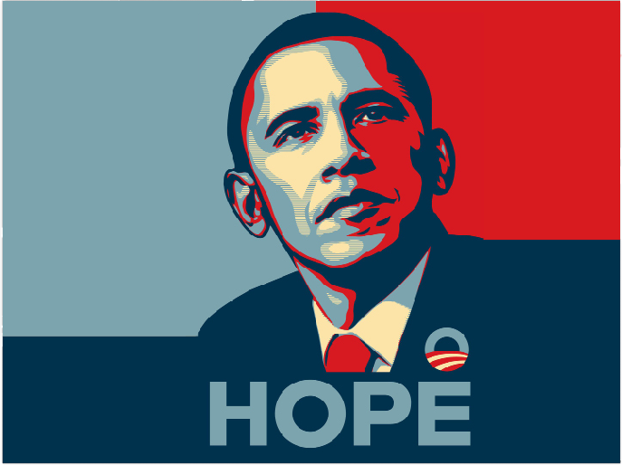
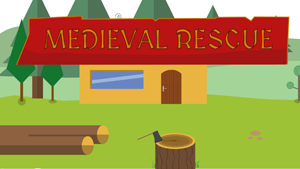
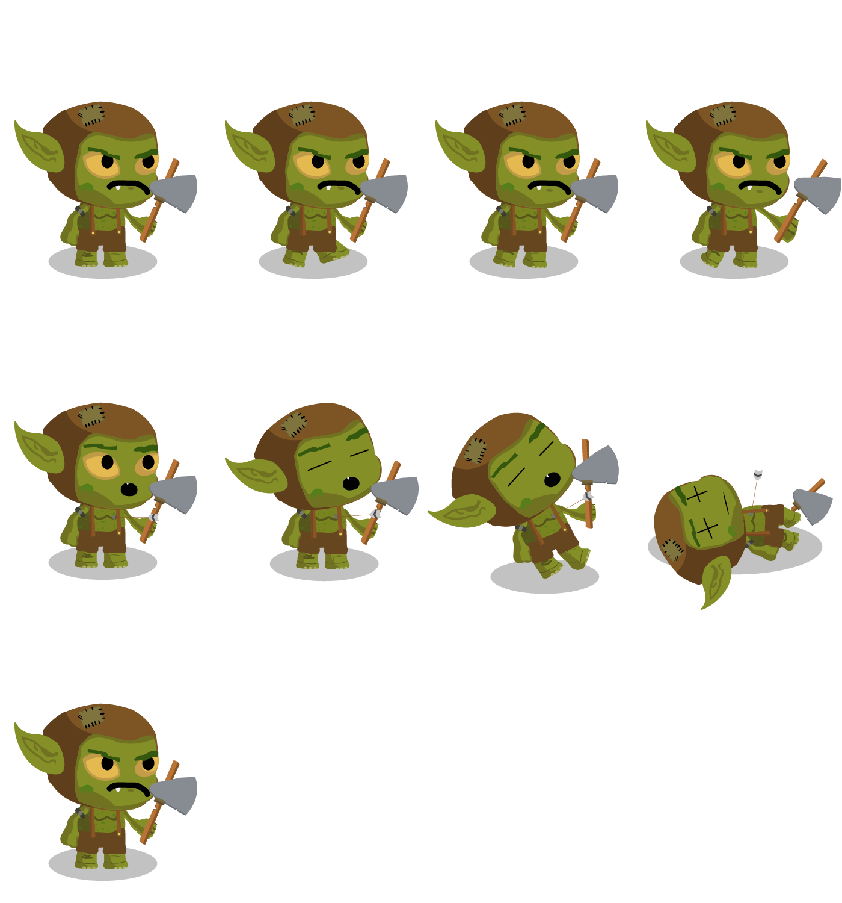
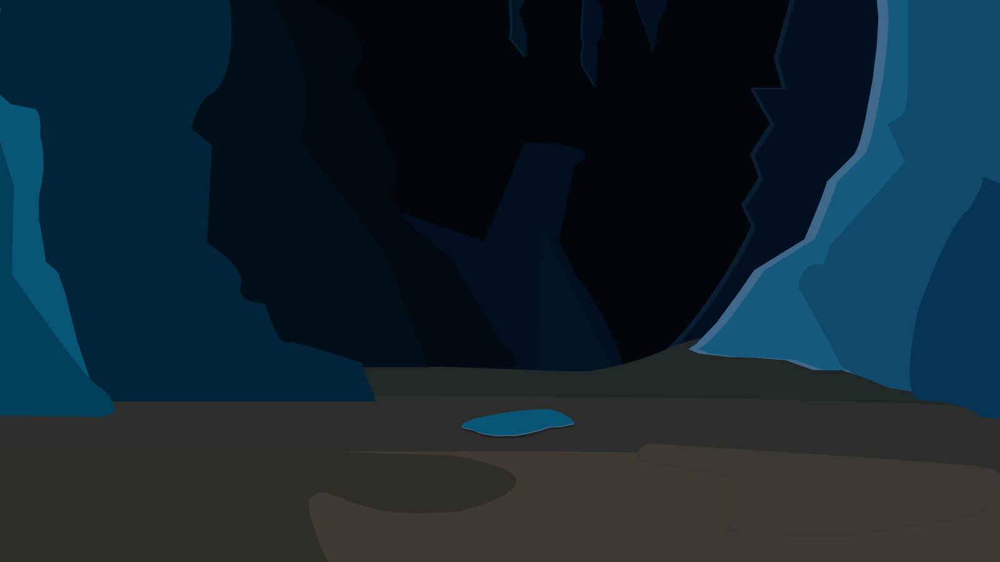
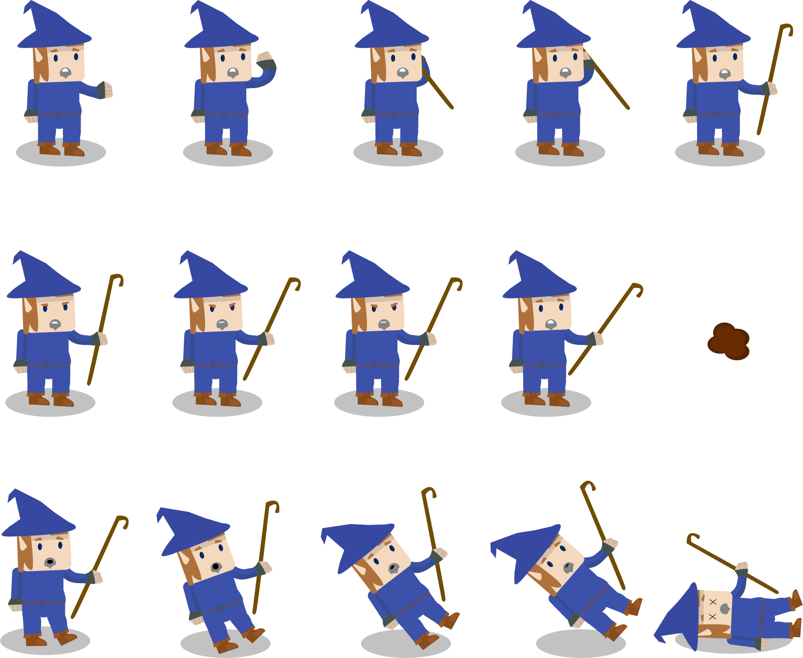
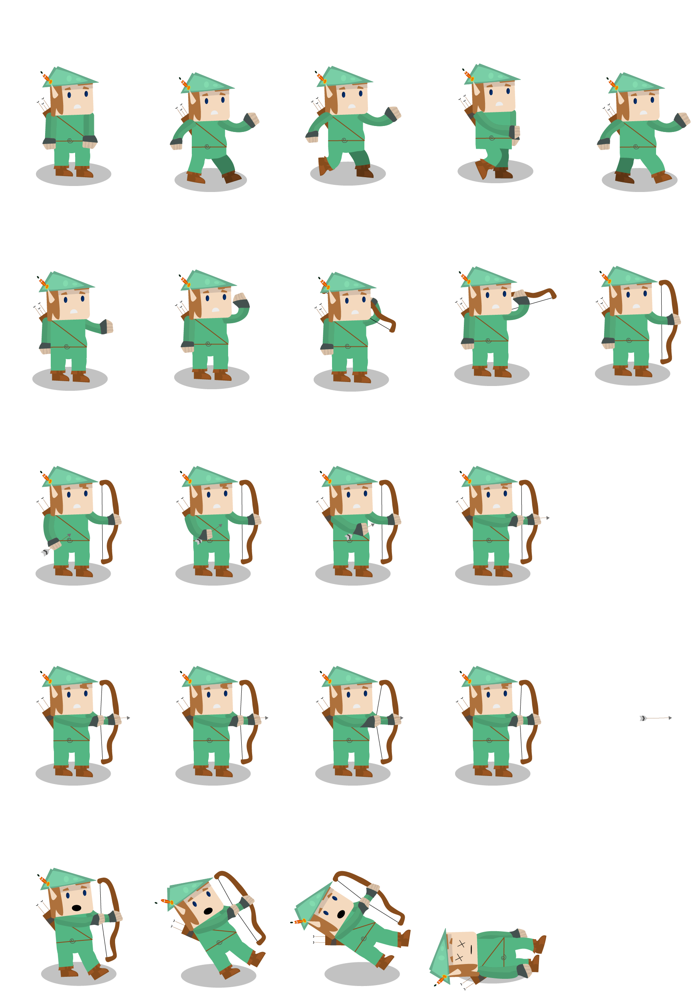
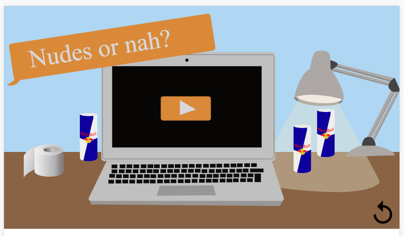
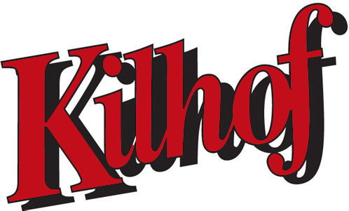

I dette tema fik vi den basale grundviden omkring opbygningen af et website.
I løbet af dette tema var hovedopgaven at udarbejde et website med responsivt indhold omkring en tildelt stilart. Herved var hovedemnerne; baggrundshistorie, typografi, farvepallet, kunstnere osv. Projektet var delvist gruppearbejde, hvor min gruppe blev tildelt Pop Art. Sammen skulle vi researche omkring den tildelte stilart, og derefter skulle vi individuelt kode vores egen hjemmeside, der samtidig skulle være responsivt på alle tænkelige devices.
Som en del af opgaven skulle vi også lave et styletile omkring vores stilartsite, som indeholdt det der var med til at definere den tildelte stil.
I dette tema blev vi introduceret for nogle forskellige animationsteknikker. Vi lærte både omkring den visuelle del af animation der handler om design, scenografi og karakterdesign og også om den tekniske del der handlede om hvordan man ved hjælp af Javascript fik figurerne til at starte en animation, stoppe den selv samme animation, og hvordan man kunne manipulere figur-animationen til at gøre som vi ville have den til. Ud fra disse og interaktiv storytelling med, samt hvordan man kan sammensætte flere animationer i en sekvenser.
Temaet bød på 2 større opgaver:
Denne opgave handlede om vores eget lille interaktive "spil" som i mit tilfælde handler om en elver hvis kone bliver kidnappet, og ens opgave går ud på at slå den onde goblin ihjel, og derved redde sin kone.
På grund af tidspres, havde jeg desværre ikke mulighed for at skifte til grotte-scenen, men jeg synes alligevel ikke at I skal snydes for at se hvor kamp-scenen KUNNE have foregået.
Du kan prøve det animerede spil, ved at trykke på det første billede nedenfor.
Nedenfor ses nogle af de figurer/scener/sprites jeg har lavet:
   Ved denne case fik vi til opgave at lave et animeret reklame-spil, som gik ud på at promovere Sex og Samfunds nye service "Privat Snak" som er med til at hjælpe unge mennesker der har spørgsmål om f.eks. sex, deling af intime billeder, og de leverer også hjælp til folk der har været ude for eksempelvis hævnporno.
Du kan prøve det animerede spil, ved at trykke på billedet nedenfor.
Du kan se vores dokumentationssite omhandlende Sex og Samfund casen her
I dette tema blev vi introduceret for nogle forskellige måder hvorpå vi kunne fortælle "den gode historie" vha. video. Her lærte vi Adobe Premiere, der er et videoredigerings-program, og Audition som er et program hvorpå man kan tweake/redigere i lyd til ens videoproduktion på.
Vi lærte blandt andet også forskellige klippe-teknikker, som gik ud på at man skulle maskere sine overgange så usynligt som muligt - eller lige omvendt, hvis altså der er en mening med dette.
Vores første større opgave var en reel kunde, nemlig Everyday som er en ny medieplatform af CPH:DOX hvor alle videoerne på siden er skabt af brugerne selv. De havde til opgave at vi skulle kreere en video hvoraf vi måtte vælge en af to kategorier: "Mennesket" eller "Borger i et samfund".
Vores formål var:
- At filmen skulle indeholde et interview med vores hovedperson.
- At filmen skulle indeholde B-rolls som er relevante ifht. hvad der fortælles i klippet
- Filmen skulle oploades til hhv. Youtube og www.everyday.dk
- Filmen skulle eksporteres og rederes i videoformaetet H.264, preset YouTube 720 HD / 1080 HD
- Musikken der blev brugt i filmen skulle være rettighedsfrit, da den skulle ligge offentligt tilgængeligt
Vi mødte en skøn fyr ved navn Alexander, der til daglig lever med rygmarvsbrok, og har overlevet infektioner i en af hans nyrer. Hans dagligdag som borger i et samfund er derfor lidt anderledes, da han sidder bundet til en kørestol, men det er ikke noget som skal stoppe ham, som han selv siger i videoen nedenfor.
Vores anden opgave i dette tema var at redesigne en eksisterende hjemmeside, som kunne have brug for en make-over.
En af mine gode venner har en far hvis hjemmeside ikke er blevet opdateret siden den blev lavet for første gang i 1900-tallet (spøg til side). Her fik vi brugt nogle af de nye kunstskaber som vi blev introduceret for på tema 1, og lidt til.
Du kan se vores forsøg på et re-design via billedet nedenfor.
I dette tema var hovedemnet; user experience. Dette handlede om udviklingsprocessen for digitale brugergrænseflader. Vores mål var at få forståelse for brugernes behov og deres brugssituation, og om hvordan vi som designer skal kunne arbejde professionelt og subjektivt, og tilsidesætte vores egne meninger og holdninger, men i stedet bygge vores design ud fra vores brugerresearch om reelle brugeres behov og meninger når det kommer til design og produkter.
Derudover var der også et virksomhedsperspektiv som handlede om at vi skulle have en del virksomhedsforståelse, at kunne sætte sig ind i virksomheden og dets strategi, mål og hvad de havde behov for, for at opnå den ønskede brugeroplevelse. UX handler også om virksomhedsforståelse. at kunne sætte sig ind i virksomhedens strategi, behov og mål for at opnå en god brugeroplevelse.
I forløbet fik vi leget med både illustrator og Adobe Xd som er et prototype-program for app-development (den rene design del)
Vores første opgave i dette tema var at kreere en app for KEA der skulle være med til at gøre det nemmere for eleverne at kunne løse deres opgaver hurtigst muligt, hvis de havde brug for hjælp.
I prototypen nedenfor kan du prøve dig igennem mit forsøg på en KEA app.
Du kan også gå ind og se min præsentation/pitch af appen her
Vores første kunde-case i dette tema var fra Joe & The Juice, der havde et loyalitetssystem som på nuværende tidspunkt fungerede, men ikke efter deres hensigter om at være internationale.
I dette forløb havde vi egentligt ret frie rammer. Det eneste vi ikke kunne gå på kompromis med var deres brandopbygning, hvilket er forståeligt nok. Og også det faktum at de ikke "gav ting gratis væk", som en af opgavestillerne sagde.
I prototypen nedenfor kan du prøve dig igennem mit forsøg på en Joe Loyalty app.
Har du lyst til at gå ind og læse om vores dokumentation eller se vores præsentation, kan du se dem her:
LINK TIL PRÆSENTATION